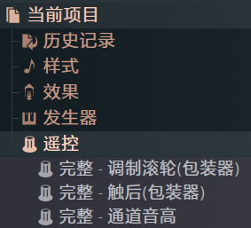

M-AUDIO Keystation 61 MK3测评
M-AUDIO Keystation 61 MK3测评，顺路带点遇到的问题
序
一般来讲，如果一个人决定要去做电子音乐，那他首先应该是去搜一下怎么下载盗版的FL Studio，然后是模仿那些在视频中看到的音乐人买一块MIDI键盘，因为买了之后就可以看起来像点样子
很遗憾，这个东西从来都是如果你会用，那很有用。但如果你不会用，那买回来的穷途末路基本就是吃灰。
更遗憾的是，我属于后者。
所以为了学会怎么用，我从二手市场买了一个M-AUDIO Keystation 61 MK3，浅浅体验一段时间后，决定写一篇小测评
免责声明： 鄙人业余水平，仅代表个人观点
原因
之所以要买这款，是因为我看中了以下几点：
- 带有半配重：我之前用过MIDIPLUS X6 PRO，在学校电子琴房则是YAMAHA P95. 都是带有半配重的钢琴，且手感都挺不错。因此我希望能买一个带有配重的键盘
- 全规格琴键和相对较多的键数：我最近在学习练琴，所以全规格的琴键和相对较多的键数必不可缺。61键对于现在的我的水平而言刚刚好
- 价格便宜：我以400元的价格购入，远比市场平均价格低
上手
琴的功能很素，只有最基础的功能——琴区域，弯音轮，调制轮，走带控制，和一个音量推子。部分功能可以通过按住一个功能键再按对应的键打开，而且功能还不少。不过那些我没有细看。没有其他midi键盘有的打击垫和旋钮。不过对于现在的我而言，研究这些真的没什么必要
如同琴的功能一样简洁，琴的背后也没几个接口——一个USB-B的方形数据充电口，一个用来接延音踏板的6.35mm音频接口，一个单独的电源接口，和一个标准MIDI接口，没了。
挺好的，该有的都有。
有两个调八度的按钮，范围是±两个八度。按钮上面的LED灯会随着一起变换颜色和亮的数量。同时按下两个按钮就可以恢复默认
键盘没有内置音源，如果是以电脑或者其他电子产品为音源，那就和市面上的其他同类型设备一样，直接用USB数据线连接到设备上就能起到供电和数据传输的作用。供电的功率很小（9V 500mA），就算用的是便携设备，也不用太担心电量的损耗
体验
虽然是半配重的键盘，但是我个人感觉手感是不如我摸过的两款半配重键盘的。按键没什么分量，按下去轻飘飘的。如果作为一个学习钢琴的设备来说，虽然比那些和手感搭不上边的塑料电子琴好一点，但也还是有点别扭的。
我最近一直在用这把琴练习一些简单的曲子，一点拜厄，一点小汤2，还试着弹了一些喜欢的钢琴曲，不过都有点难。整体来看，最大的问题还是那个有点塑料的手感——飘飘的手感导致有点难以控制演奏的力度。如果说想要真正的练琴，还是到附近的琴房玩电钢吧。
不过，如果是在演奏和弦一类的，我倒是感觉这算一种优点。毕竟在演奏现场的话，应该可以更快更轻巧地弹奏和弦。
连接FL Studio之后遇到的问题
这一段是我写这篇文章的最大契机，虽然不能说算彻底解决，但至少有一点用
这款键盘没有针对FL进行优化，第一次连接只能使用最基础的键盘功能。但无法使用走带控制，弯音轮调制轮和踏板。
走带控制
这是最容易解决的问题。根据说明书，走带控制区用的是Mackie Control Universal.
Mackie为音乐软件Logic Pro设计的专用控制器“Logic Control”。后来Mackie推出了功能相似但兼容更多DAW的“Mackie Control”。最终，这两条产品线合并，演变成了著名的“Mackie Control Universal (MCU)”
考虑到这款键盘设计之初就是为Logic准备的，这也算意料之中
将键盘连接到电脑后，在选项-MIDI选项中你可以看到两个设备，将下面的设备的设备类型选为Mackie Universal Control（在Legacy子文件夹中）
弯音轮&调制轮
与其说是没有优化，倒不如说没有绑定。FL状态区中可以看到信号输入，但是是无法识别的信号。这里提供两种方案
第一种是手动绑定，在左侧文件管理中的当前项目-遥控中绑定调制滚轮和通道音高，选中之后动一下轮子就可以绑定了，和旋钮是一样的绑定方式

第二种则是和上一步类似，将上面的第一个设备类型改成KeyLab mkII，就可以用弯音轮和调制轮了
很奇葩的是，这两个甚至都不是同一家公司做的，只是名字很像
弯音轮的范围只有±200音分，不知道是硬件设置如此还是软件如此限制。
实际操作建议选择第二种方法，手动绑定只限于局部工程。
（给自己留个笔记，一个半音等于100音分）
（两个半音叫小二度）

踏板
踏板其实是开箱即用，把踏板插入琴后面的相对应的接口上就能启动踏板了。不过只限定用SP-2型号的踏板。随琴附赠的踏板接上去之后是没有反应的。
音量推子
这个目前没发现怎么解决，应该只能手动绑定音量轨道了
尾
回想起来，自第一次买MIDI键盘已经过去了差不多四年了。那是一款YAMAHA的PSS-A50. 说是MIDI，但其实本质上就是一个带MIDI功能的儿童用电子琴罢了。37键，没有配重，还是迷你规格按键。不过我当时挺喜欢那把琴的，虽说是有点占地方，而且有些幼稚，但麻雀虽小五脏俱全，该有的功能他全都有。只不过后来我想尝试新的东西，最后上了大学之后就出掉了。
第二块键盘是MIDIPLUS TINY+，购入的原因是因为我用过我朋友的MIDIPLUS X6 PRO，手感功能都很不错，所以打算买入同品牌但偏低端的产品。
这是一个极为错误的选择
我很不喜欢这款键盘，因为他的手感比A50还要糟糕。按起来软绵无力，连接到宿主之后的力度曲线更是离谱——力度经常到两个极端，不是过大就是过小，调了力度曲线之后的表现也远远没有到让我满意的程度。那把键盘就被我雪藏了，只会在想起来的时候拿出来用一用。
这个暑假结束了，我也没学到多少东西，不过至少能有一点演奏的乐趣，也不错